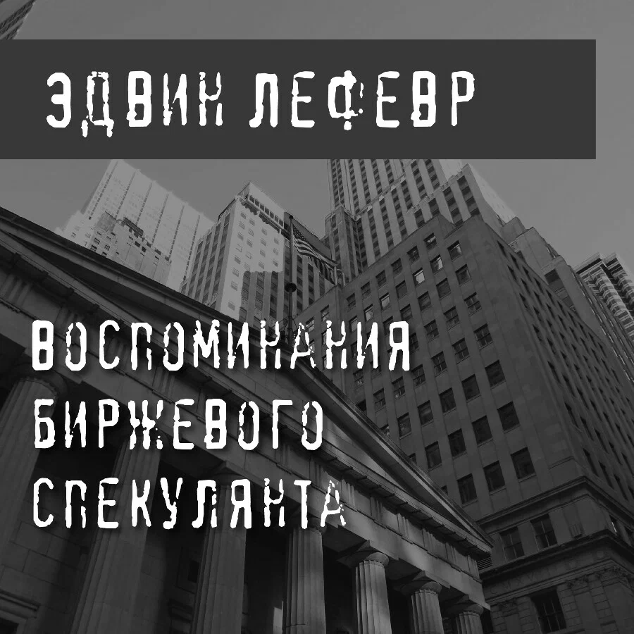
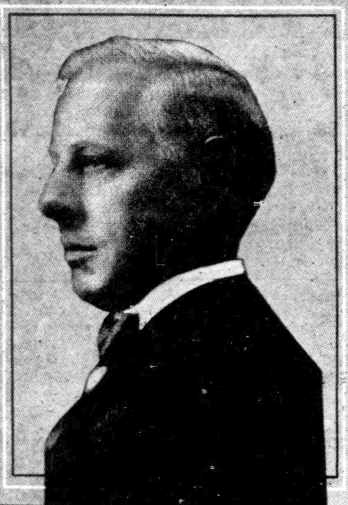
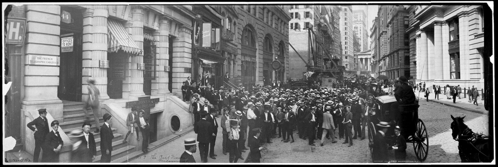
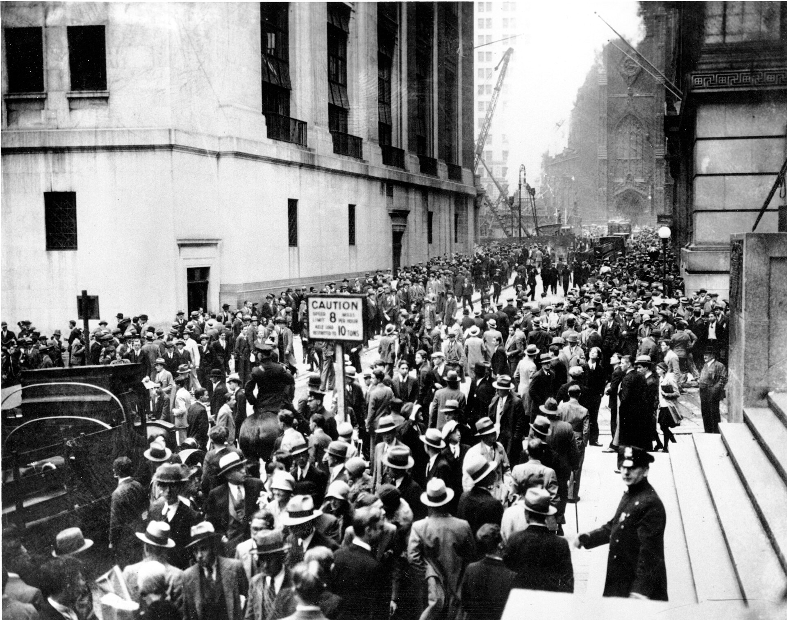
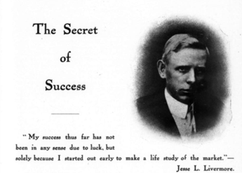

История Ларри Ливингстона — Джесси Ливермора, великого спекулянта начала XX века. Мои заметки со сделками, ошибками и уроками, записанные по дороге.

· листай вниз ·
LIVERMORE ▲ЦЕНЫ ВЫБИРАЮТ ПУТЬ НАИМЕНЬШЕГО СОПРОТИВЛЕНИЯUNION PACIFIC ▼ ШОРТ 3000НЕ ДЕЙСТВОВАТЬ НАУГАДU.S. STEEL ▲ 55УРЕЖЬ ПОЗИЦИЮ ДО ОТМЕТКИ «СОН»КОФЕ ▲ 9¢ → 23¢СПОРИТЬ С ЛЕНТОЙ БЕССМЫСЛЕННОАЖИОТАЖ ДАРИТ БУМАЖНУЮ ПРИБЫЛЬ — НА БУМАГЕ ОНА И ОСТАЁТСЯLIVERMORE ▲ЦЕНЫ ВЫБИРАЮТ ПУТЬ НАИМЕНЬШЕГО СОПРОТИВЛЕНИЯUNION PACIFIC ▼ ШОРТ 3000НЕ ДЕЙСТВОВАТЬ НАУГАДU.S. STEEL ▲ 55УРЕЖЬ ПОЗИЦИЮ ДО ОТМЕТКИ «СОН»КОФЕ ▲ 9¢ → 23¢СПОРИТЬ С ЛЕНТОЙ БЕССМЫСЛЕННОАЖИОТАЖ ДАРИТ БУМАЖНУЮ ПРИБЫЛЬ — НА БУМАГЕ ОНА И ОСТАЁТСЯ

Джесси Ливермор · 1923
Мальчишка, который обыграл Уолл-стрит
«Воспоминания биржевого спекулянта» Эдвина Лефевра вышли в 1923 году и стали библией трейдера: под именем Ларри Ливингстона скрывается реальный Джесси Ливермор — человек, который несколько раз становился миллионером и несколько раз терял всё.
Это не учебник, а честная исповедь: первые сделки в 14 лет, бакетшопы, крах 1907 года, миллионы на панике и банкротства, манипуляции, инсайдеры и вечная борьба с самим собой. Ниже — мой конспект по главам с акцентом на сделки. Тезисы и формулировки — как я их услышал, вольно и по делу.
Аппаратная тикеров NYSE · 1920-е · Library of Congress
Глава 01
Окончив семилетку, пошёл в 14 лет работать в брокерскую компанию: рисовал мелом на доске цены активов, которые сообщали по телефону.
Стал замечать закономерности в поведении акций перед их снижением или ростом. Вёл дневник таких прогнозов — и 7 из 10 оказывались верными.
Один знакомый предложил сыграть на росте одной компании по инсайдерской информации. ГГ проверил дневник — по его модели действительно должен был быть рост. Он отдал все свои деньги и на этом заработал $3.12.
Потом уже играл сам и за полгода заработал $1000, которые его мать советовала положить на вклад — вообще она с большим скепсисом относилась к этой деятельности.
Главы 02–05
«Космополитан»: шорт 3500 акций Американской сахарной компании, залоговая маржа $10 000.
Почуял неладное и закрыл позицию.
В конце рассказывается о человеке, который заработал большие деньги на падении рынка, а потом похожим образом скамил бакетшопы, — но умер в нищете.

Уличный (curb) рынок на Брод-стрит · 1902 · Library of Congress
Глава 06
Шорт тремя частями по 1000 акций — на одной чуйке, интуиции.
Потом ещё 2000, когда позиция вышла в плюс.
Потом ещё 5000 после землетрясения.
Потом ещё 10 000 и ещё пакет акций.
Не действовал наугад! На следующий день закрыл. Прибыль — четверть миллиона.
Воды Саратога-Спрингс. Потом разглядел инсайдерские покупки по этой же акции — стал её накупать.
Личный разговор с главой брокерской компании Хардингом по телефону. Тот сказал, что это фокусы инсайдеров и лучше бы он деньги на скачки потратил.
Сбросил все пакеты и решил зашортить 4000 акций. А компания тем временем решила выплатить 10% дивидендов.
Один брокер из-за ошибки заработал 350 тысяч, продал место на бирже и купил землю.
Закрыл шорт — потерял 40 тысяч. По своему опыту и чутью лонганул на хаях: отбил убыток и +15 тысяч.
Перестал следить за отдельными акциями.
Глава 07
Дьякон Уайт проверил инсайдерскую наводку, продавая акции, и только потом открыл лонг, убедившись, что есть покупатель.
Азарт и слепая вера в фортуну.
Глобальные тенденции рынка — глобал макро.
Наставление: докупать прибыльные позиции и частями. Усредняться в спекуляциях, мягко говоря, не советует.
Глава 08
Крупная прибыль приходит к тем, кто может определить глобальное движение рынка.
Три раза пытался зашортить рынок олл-ин — и обнулился на отскоках.
Слил 300 тысяч.
Глава 09
Чилил на пляжах. Вроде на медвежьем рынке лонганул какую-то акцию на пробитии 300. Ошибся: сначала увеличил позицию, потом стал закрывать в минус.
Цитаты про предсказателей по тикерной ленте — и о том, что может быть увлекательнее подъёма, когда оказался на самом дне.
Поехал отдыхать во Францию с 750 тысячами, там начался движ — стал шортить и вернулся в Нью-Йорк.
Заработал больше миллиона на шорте в кризис ликвидности.
Там фоном сам Морган, по просьбе президента фондовой биржи и главы другого банка, надавил на все банки, чтобы те использовали свои резервы для предоставления денег брокерам.
Сам ГГ переобулся: на дне закрыл шорт и стал покупать акции. Причём на него ещё давили: мол, его шорт может обрушить рынок, и как гражданин и патриот страны он должен делать то, что в её интересах.

Толпа у NYSE в день краха · 24 октября 1929 · двумя десятилетиями позже история повторилась
Глава 10
Просчёты в спекуляциях бьют по самым уязвимым местам: по карману и самолюбию.
Скоро слил лям на одной ошибке.
Купил яхту, но тянуло торговать дальше.
Про товарные биржи: меньше манипуляций, только спрос и предложение. Потребительский спрос и возможности производителей.
Цены, подобно всему в нашем мире, выбирают путь, по которому проще всего идти. Случайные события — попутный ветер на этом пути.
Цена не может быть слишком высокой или слишком низкой — она не имеет отношения к пути наименьшего сопротивления.
Направление определяется ещё до известий.
На бычьем рынке бывает пофиг на негатив, а известия бычьей тематики раздувают сверх меры. И аналогично на рынке медведей — пофиг на позитив.
Вычисляешь уровни противостояния и вступаешь в игру, как только акции выберут наиболее удобное направление и предельно ясно проявят его.
Рассказ про трейдера, который покупал 100 акций и докупал растущие, а при падении на 1 пункт закрывал позицию.
Каждый раз трейдеру приходится наступать на горло соблазнам и собственным слабостям.
Глава 11
Торговля хлопком, пшеницей, кукурузой.
Глава 12
Другой человек из хлопкового бизнеса предложил коллаб, но ГГ отказался.
Рассказывает, как пришёл коммивояжёр и впарил ему подписку на книги Вальтера Скотта за $500. Похвастался тем, что у него есть подписанный договор с самим Морганом.
В итоге ГГ разорвал контракт, но попросил провести коммивояжёра к Хардингу (главе брокерской компании) — тот впарил ему подписок на 2 тысячи.
Потом ещё встретились: тот шёл впаривать подписки мэру-демократу.
По оценке ГГ, один из секретов успеха Томаса: он начинал с себя и искал доводы, которые могли бы убедить его самого.
Потом ещё несколько раз встречались, и тот стал топить за лонг хлопка — ГГ повёлся.
Набрал 440 тысяч кип, потом уже стал продавать.
От миллионов капитала остались сотни тысяч — около 10%.
Продал яхты. Болезнь: на лечение надо было $200 тысяч.
Ещё история о том, как несколько человек пытались заработать на бирже на пальто — и ни у кого не получилось. Когда ждём, что рынок оплатит капризы и прихоти и решит все финансовые проблемы, — мы полагаемся на удачу.
Проебал остатки и ушёл в долги.
Глава 13
Оказался должен больше 100 тысяч.
Чтобы начать с нуля, поехал в Чикаго.
Какой-то банкир из Нью-Йорка через знакомого позвал мутить темку. Это был глава какой-то брокерни, который хотел, чтобы ГГ стал их клиентом. Нужно это было потому, что о ГГ разошлись слухи как о спекулянте-медведе, открывающем огромные позиции, — и это могло прикрывать сделки по закрытию лонгов состоятельных клиентов этого брокера, включая его зятя.
Он выдал ГГ $25, и, делая по 150% в неделю, из этой суммы у него получилось 112 тысяч. Хотел вернуть 25, но человек отказался — и ГГ об этом жалеет: не нравится, когда кому-то должен.
Вернул сноровку.
Открыл шорт 8 тысяч акций Chesapeake & Atlantic. Тот брокер был шурином и близким другом президента этой компании. Он отдал поручение закрыть тот шорт и открыть лонг и сказал, что у него инсайдерская информация. ГГ согласился, так как чувствовал себя обязанным.
В итоге всё проебал и остался должен 150 тысяч. Но этот банкир приободрил его, сказал, что разрулит, — через полгода долги снял и пополнил ему счёт, непонятно как.
Потом он купил ему ещё 10 тысяч акций какой-то другой железнодорожной компании — того же зятя. Они опять обвалились, и ГГ задолжал ещё больше. Задолженность ему опять как-то списали какими-то мутными сделками.
Понял, что был марионеткой, разорвал сотрудничество и остался опять без денег.
Ещё обидно было, что в тот момент он верно разглядел тренд, а теперь рынок уже не давал возможности заработать.
Началась полоса безденежья 1911–1914 годов.
Короче, оказалось, что тот зять заболел; чтобы не потерять наследство от него, надо было как-то закрывать его позиции, и чтобы они не обвалились, ГГ не хотели выпускать на медвежью арену.
Глава 14
К моменту выхода из игры должен был брокерам больше миллиона — так как они ему доверяли, зная, на что он способен.
Начал брать деньги в управление и на штилях на рынке что-то подзарабатывать.
Убедился, что проблема в нём, а не в рынке. Это была тревога о долгах.
Решил освободиться от долгов через процедуру банкротства. Понимал, что, как только выкарабкается, вернёт всё, что задолжал, — обязательства никуда не денутся.
Пошёл обращаться ко всем кредиторам, и в принципе все соглашались — из рациональных побуждений Уолл-стрит. Осталось только двое: одному он должен был $800, и тот на каждый чих судом грозился, а второй — разорившаяся брокерская контора. Но уже должен был меньше 100 000.
Легко себя почувствовал и обрёл свободу, концентрацию внимания, отсутствие посторонних хлопот.
Фондовая биржа не работала полгода.
Пошёл к Дэну Уильямсону, который до этого давал ему 25 тысяч. Но тот предложил купить только 500 акций.
Был только один шанс — поэтому он полтора месяца потратил на доскональное изучение всех тонкостей ситуации на бирже.
Достижение круглой суммы: цена двигается дальше на 3–10 пунктов, особенно при пробитии 300.
В начале 1915 мониторил какую-то акцию долго, упуская рост; зашёл по 98.99 — вечером уже была 115. Приобрёл ещё один пакет, +30 пунктов — и закрыл. $140 тысяч.
Гибель «Лузитании» — и рынок рухнул.
США поставляли союзникам кучу товаров, страну заливал золотой дождь, и инфляция стояла на пороге — буйный рост из-за войны.
Удивляешься, как похожи были современные трейдеры и их компании: ни игру, ни человеческую натуру ничто не в состоянии изменить.
Небольшие откаты у фаворитов — разворот тренда. Те из бывших фаворитов, что перестали расти, он зашортил, а в остальных продолжил держать лонг. Постепенно его шорт превысил позиции в лонг.
Шорт 60 тысяч (12 компаний). Наступил день, когда все цены пошли вниз. Вдвое увеличил шорт.
Рынок стал обваливаться на новостях о выступлении президента о завершении войны. На этом он закрыл позиции: такой хороший шанс — на увеличившемся спросе превратить бумажную прибыль в наличность.
Опыт научил не совершать медвежьи вылазки, когда цены на пике. Только на откате — и если за ним не идёт новый рывок.
Этот год принёс около 3 млн долларов.
1917: конец войны. Акции и пшеница должны были сдать в цене, а хлопок вырасти. 15 000 кип. Германия объявила о возобновлении неограниченной подводной войны.
На медвежьем рынке при возникающей суматохе и панике всегда надо закрывать короткие позиции.
В тот день заработал 1,5 млн долларов. По хлопку ушёл в −375 тысяч долларов. Не знал, что делать, но так как приехал на море на отдых — решил закрыть позиции.
Первое, что сделал, вернувшись с юга в Нью-Йорк, — расплатился со всеми кредиторами; они даже отказались от причитавшихся им процентов. Последним получил деньги тот самый человек с 800 баксами.
Существенную сумму внёс в аннуитетный фонд. Потом ещё женился и внёс часть капитала на трастовый счёт супруги, а потом и сына. Обезопасил семью: позаботился о том, чтобы эти счета были ему недоступны, даже если бы жена на коленях просила его ими воспользоваться.
Глава 15
Состязание суждений и точек зрения. Бернард Барух.
Товары выросли в 3–4–5 раз по сравнению с довоенными ценами. Лишь рынок кофе оставался стабильным (избыток предложения в США), кофе даже подешевел. Но торговый флот тоже сократился — и потенциально импорт тоже.
Начал закупать кофе как долговременное вложение. 9 месяцев ничего не менялось, и срок опционных контрактов уже протух. Приобрёл в три раза больше — с отсрочкой исполнения. Рынок пошёл в рост.
На руках — не одна сотня тысяч мешков.
Торгует в пределах возможностей, плюс ресурсы на всякий случай.
Коммерсанты, которые продавали ему контракты без покрытия, не могли поставить такой объём и обратились за помощью к правительству: «простой американец будет отдавать последние гроши за баснословно дорогой кофе». Комиссия определила границы цен и сроки исполнения — пришлось продавать.
Потом через время биржу открыли, и цена подскочила до 23 центов с 9, потому что импорта не было: цена была низкая и не окупала морские перевозки.
А ГГ думает, что это была одна из лучших идей.
Затем была полоса удачи на игре на понижение. Биржевые трейдеры и журналисты стали видеть в любом снижении его происки — бредовые сплетни! Обвиняли в непатриотичности.
Состязание суждений и точек зрения — Бернард Барух.

The Ticker Magazine · июль 1908 · «Mr. Livermore» в профиль
Глава 16
Публика обожает получать и раздавать подсказки.
Есть целый класс советчиков-манипуляторов, пиарящих разные фирмы.
Его пригласили в группу таких промоутеров — он отказался, но сам закупил эти акции. При этом их стали скупать, только когда цену подняли в три раза.
Был бычий рынок: всем хотелось быстрой наживы, никого не интересовали далекоидущие вложения. Европейские закупки товаров военного назначения привели к тому, что в стране золото можно было грести лопатой.
Акции стартовали неплохо. ГГ держал 10 000 акций. Промоутеры хотели придержать цену, чтобы его высадить, но ГГ не повёлся. Стали вздувать цену. На 120 пунктах он продал свой пакет акций, что затормозило рост. В итоге цену догнали до 150, но рынок уже присмирел. И менеджеры этого промоутерского пула стали сбывать акции тем простакам, что покупают на снижении и надеются на откат к максимальным ценам.
ГГ отдыхал во Флориде с женой и выиграл куш в казино — отдал ей 500 баксов. После чего глава компании, которую разгоняли на бирже, сам попытался оказаться рядом с женой и прорекламировать ей свою компанию — такую мегасекретную информацию о супервыгодной сделке.
Миссис Ливингстон решила вложить эти 500 баксов в акции компании: ей не жалко было их потерять, и она хотела блеснуть перед мужем. На следующий день их цена поднялась на три пункта, при этом активно торговалась. ГГ решил шортануть на 10 000 штук. Если бы не начал торговать, может быть, выросли бы и на шесть пунктов. На следующий день продал ещё 2000 на старте торгов и 2000 перед закрытием.
Счёт супруги в это время ликвидировали, и она ушла даже в долг. Брокер посоветовал закрыть акции и посоветоваться с мужем; она сказала: ни в коем случае, он против того, чтобы я торговала на бирже.
Наивное упование на чудо — следствие избытка оптимизма. Немало тех, кто всегда полон надежд и окрылён мечтами.
В общем, в итоге она всё-таки призналась мужу; тот её пожурил и отдал деньги. И забавно вышло, что вот этот совет, который должен был прийти к нему через жену, она ему и не сообщила — чтобы сама поторговать по секрету.
При этом таких «алкоголиков и наркоманов», падких на подсказки, много не только среди новичков, но и среди опытных торговцев на Уолл-стрит.
Поучительная история про то, как разные крупные игроки велись на какие-нибудь подставы и проигрывали деньги.
А вот Джон Гейтс по прозвищу «Поставлю миллион» не повёлся на наводку банкира в тесных связях с инсайдерами одной компании, который советовал продать для небольшого снижения, — наоборот, купил акции и заработал 60 000.
ГГ встретил карикатуриста Роджерса. Тот рассказал ему случай накануне войны с Испанией. Художник был в гостях у брокера, биржа гудела как осиный рой. Если разразится война с Испанией — рынок упадёт, потому что в Европе станут продавать акции США; если будет мир — акции надо скупать. Приятель-брокер думал, что делать, и не мог решить. Снял шляпу, чтобы вытереть лоб, — а там было написано WAR (инициалы карикатуриста: тот перепутал и взял не свою шляпу в гостях). Брокер решил, что это подсказка свыше. Возможно, так оно и было: грянула война, котировки обвалились, и брокер сорвал отличный куш.
Мозги инвесторов устроены совершенно иначе. Рассказ про самого прозорливого инвестора из Пенсильвании с немецкими корнями, чья карьера похожа на судьбу Рассела Сейджа. Владел акциями железнодорожной компании. Пошли слухи, что управляющий фигово управляет и транжирит деньги. Управляющий оправдывался, предоставлял документы и цифры. Но инвестор сразу продал акции и купил другую железнодорожную компанию.
Бумага с информацией про сокращение расходов была супердорогой, и директор её расточительно использовал и выкидывал, когда общался с инвестором. А кабинет второй компании был рядом с выходом и всегда открыт, так что любой мог подойти и спросить что-либо. Когда инвестор заглянул к этому директору, тот обрезал конверты, чтобы получить стопку чистой бумаги. Не терялось ничего: ни освободившихся минут, ни использованных конвертов, — значит, и от сотрудников требует того же. Стабильная выплата дивидендов и налаженная инфраструктура.
А первая компания разорилась. Это была самая прибыльная сделка того инвестора за всё время.
Глава 17
Случай с чёрной кошкой, пославшей сигнал сбыть акции на самом излёте тренда.
ГГ только подливал масло в огонь убеждения своего друга о том, что его ведёт мистическое чутьё.
Джеймс Кин.
ГГ предлагал конгрессменам более логичную систему начисления налогов на торговлю на бирже.
На ажиотаже рассматривал сырьевые рынки — стальной и медный. Купил ценные бумаги обоих товаров и по своей давней привычке планировал наращивать линии.
5000 акций Utah Copper: на 114 возникли сомнения — дальше не покупал. United States Steel — 20 000 по тем же ценам. Стабильно росли; пополнял линию — и получилось 72 000.
Уголь не стал докупать.
Затем грянул бум на товарном и фондовом рынке. Всё росло и росло. Ждал, что рынок даст знак, что впереди разворот. Не задавался вопросом, когда именно, — но был наготове.
Появилась возможность закрыть позицию без потери бумажной прибыли, так как был просто огромный спрос на покупку — на излёте тренда. Выигрыш был около полутора миллионов: продавал в лучший момент. Продал всё на один пункт ниже максимума дня и периода ажиотажа.
А вот Utah Copper упала на пять пунктов. Он их не продавал, потому что рассчитывал на рост цен на медь, да и в целом был бычий рынок.
Рынок изучают так же, как врачи изучают болезни: тоже много непредсказуемых факторов, не всегда зависящих от врачей, при этом накапливается опыт и умение делать быстрый, стремительный анализ.
Спекулянт должен использовать самые выигрышные шансы и предвидеть их.
Пэт Хёрн: пока не поставишь — никак не узнаешь.
Если всегда опираться на накопленный опыт, то иногда можно сесть в калошу — что время от времени и происходит. Ну а если отказаться от подсказок опыта — то из калоши никак не вылезти.
Шортил пшеницу, так как из-за задержек поставок из-за забастовок вскоре на рынок должно было хлынуть оверпредложение. Не прошло и недели, как курс обвалился на 6 центов.
Мастерство изучения и анализа всех аспектов сырьевых рынков.
Горячие источники и гольф. Дважды ошибся с входом и выходом. Продал 40 тысяч. −75 пунктов. Курс провалился, и возник переполох. Всё продал — отбил убыток.
Никакой интуиции: наблюдения и оценки, удачный тест.
Захватывает сама торговля: взял реванш у судьбы с помощью цепкой памяти и многолетней практики.
Глава 18
Кукуруза. Заработал на покупке, а потом продаже.
Инсайдеры зарабатывали на высокой волатильности акций.
Ежегодный зимний отпуск во Флориде: занимался рыбной ловлей, отдыхал. За биржей следил только из газет.
Акция ТТК торговалась по 155, хотя недавно была 140, и он ожидал смены тренда.
Продал 2000 акций в шорт по 153. Потом ещё 2000, потом ещё 2000. Не отпускала мысль, что маловато продал. Продал ещё 2000 — и успокоился. Ещё 2000. Суммарно 10 тысяч.
Поехал в Нью-Йорк. Стал изучать ситуацию: инсайдеры зачем-то накручивали курс, что оказалось ему убийственным.
Продал 30 000 по 133.
У инсайдеров была информация о его и других позициях, поэтому играть против таких потёртых биржевиков было опасно. Но выступить против рыночных условий не может никто — и это было его козырем.
Уже много набилось спекулянтов в шорт, и инсайдеры прокачали цену до 150. Но ГГ остался в позиции, так как рыночные факторы только усугубились. Хотя инсайдеры и хотели выдавить его из позиции.
В общем, цена несколько раз падала и отскакивала до 149, плюс пускали слухи, что вот один лох-спекулянт засел в шорте.
Тогда он продал 10 тысяч акций другой компании, которая владела пакетом акций этой ТТК. Та уже была не очень ликвидной, поэтому её он легко просадил, чем пустил падение и в ТТК: на рынке подумали, что пошёл какой-то инсайдерский движ.
ТТК упала до 125; там возник спрос, и инсайдерам получилось сделать отскок на 20–25 пунктов.
В общем, какая-то пара постоянно продавала пакет смешанной компании и откупала, как только она просаживалась.
А в игру заходил, потому что ожидал общего медвежьего рынка.
В итоге цена всё-таки поехала вниз, как на лифте: 120–110–100. Ниже 90 на панике вышел из игры. Откупил 30 000 на самом дне. Заработал более миллиона.
Потом был период снова бычьего рынка. Акции выросли до 150, и он их шортанул на 10 000. Но акции встретили какое-то сопротивление, а потом выросли до 153 — там он закрыл шорт, а по 156 открыл лонг. Хотя рынок был скорее для медвежьей игры. Скоро пробило 200.
Была шумиха, что у него убыток 8–10 млн. Держал слишком много — потерял часть бумажной прибыли.
Глава 19
Слово «манипулирование» часто стали использовать как «жульничество», хотя это не совсем так.
Когда торгуешь крупные пакеты, неизбежно влияешь на цену — поэтому приходится как-то ухищряться.
Когда ГГ читал про истории из трейдинга, то думал, что в то время люди были гораздо наивнее. Но и в его время использовались те же самые схемы, пирамиды — в общем, полно простофилей, которые на всё это продолжают вестись.
Много рассказывается про корнеры — вроде это что-то вроде шорт-сквиза, или того, что ещё называют коротким сжатием. Ситуации такие происходили часто, хотя чтобы корнер был создан намеренно и на нём кто-то обогатился — такое скорее редкость. Но каждый спекулянт мечтал что-то такое провернуть. Рассказывается о множестве таких моментов.
Коммодор Вандербильт ввёл термин «разводнение акций». О разорившихся дотла говорили: «он продавал Гарлем».
Грандиознейшая манипуляция Джеймса Кина с акциями United States Steel весной 1901 года. Ни разу не обсуждал операцию с самим Морганом. Действовал через третьих лиц — брокерскую компанию. Сам создал рынок, на котором сорвал многомиллионный куш. Действуя от лица синдиката андеррайтеров, продал 750 тысяч акций. Капитализация превышала весь госдолг страны. Бумаги разогнали в 1901 до 55; в 1903 шли по 10, а в 1904 — по 8 ⅞.
Рокфеллер и Роджерс поставили перед Кином следующую задачу: продать уже отлично разрекламированные бумаги, спонсируемые богатейшими магнатами, — акции Объединённой медной компании.
Трейдеру, как полководцу, следует помнить о различии тактики от стратегии. Продавал на откате.
Когда он в итоге пристроил инсайдерский пакет на 20–25 млн долларов, Роджерс хотел ему выдать гонорар в 200 000, но тот его не взял. Позже Роджерс порекомендовал Кину брать медные акции по 130.
Когда на рынке было всё хорошо, становился сварливым, а на грани краха — наоборот, благодушным.
Но во времена ГГ многое уже взяли под контроль, обложили налогами на продажи и прибыли. Ходы и трюки, что использовал Джеймс Кин, стали совершенно бесполезны.
Но ГГ думает, что это звание «короля манипуляции» абсолютно заслуженно и что Джеймс Кин достиг бы успеха и в 1922 году, как и в 1901-м или 1876-м, когда, впервые оказавшись в Нью-Йорке, за пару лет сколотил состояние в 9 млн долларов. Он был из числа тех, кому предначертано быть на шаг впереди остальных.
Чем больше в истории реальных фактов, тем она достовернее; а чем она достовернее, тем реклама эффективнее.
В наше время недостаточно просто сделать так, чтобы акции производили впечатление сильных: манипулятор должен сделать их сильными, то есть следовать рациональным принципам биржевых спекуляций.
В этом и секрет Джеймса Кина: он был уникальным манипулятором, потому что был уникальным трейдером.
Глава 20
ГГ считает, что вместо «манипуляции» лучше бы подобрать какой-нибудь другой термин.
Как правило, манипуляция организуется, чтобы сбыть новой публике новые ценные бумаги настолько дорого, насколько это возможно.
Всегда выгоднее, когда бумаги распределены между тысячами владельцев.
Ни к чему выставлять заоблачные цены, если вы не смогли убедить публику, что приобретение определённой ценной бумаги — предел их мечтаний.
Принцип Кина и тех, кто гремел до него: увеличивай курс до предела, а потом продавай на откате.
К ГГ тоже приходят с таким запросом. В качестве условий он ставит получение колл-опциона на тот пакет акций, который необходимо разместить. Партиями с растущей ценой: например, торгуется по 40, у него опционы на несколько тысяч по 35, по 37 и вплоть до 75.
На первой или двух сделках не удалось заработать.
Чтобы курс поднялся, нужно подъём с размахом разрекламировать. Лучший рекламный агент — биржевой телеграф и тикерная лента. Достаточно заставить акции стать активными. Пресса тогда сама разрекламирует компанию.
Джеймс Кин давал опытным спекулянтам колл-опцион по цене выше рыночной, чтобы им была мотивация поработать. Но ГГ старался просто сделать акции активными.
Для спекулянтов даже не важно, чтобы прибыль была грандиозная, — важно также, чтобы она была быстрой.
Публика становится коллективным покупателем, спрос растёт.
Причём по хаям он продаёт акции даже в шорт без риска, так как они покрыты колл-опционами. А потом, на затишье или если цена начинает снижаться, он просто откупает свой шорт, тем самым создавая дополнительный спрос. Если же цена начинает расти, то он акции сдувает в том количестве, которое не станет препятствовать подъёму.
В любой ситуации: биржевой спекулянт, как только акция приняла какое-то направление, двигается по этой линии.
Глава 21
История о том, как ГГ поднял цену акции на три десятка пунктов, купив всего 7000 штук, вызвав при этом такой аппетит у рынка, что ему было мало, сколько ни дай.
Imperial Steel. 30% в свободном обращении через брокерские дома. Но потом спрос исчез. Требовалось создать рынок сбыта.
Он попросил дать ему полную отчётность по компании и убедился, что там всё хорошо и в принципе оправдывает текущую справедливую оценку.
В качестве гонорара он попросил опцион на 100 000 акций от 70 до 100 ценой — честная цена, пропорциональная потенциальной прибыли.
Синдикат владел или контролировал две трети ценных бумаг. ГГ запросил, чтобы они депонировали 70% акций по трастовому соглашению. Актуарная таблица риска у страховщиков: вероятность того, что оставшиеся 30% одновременно выйдут на рынок, такая же, как если бы все застрахованные от несчастных случаев одновременно погибли.
ГГ скупил все акции по 70 и немного дороже.
Продавая при повышении цены и покупая при понижении, ГГ не только поддерживал курс, но и делал акции высоколиквидными.
Таким образом удалось поднять цену акций с 70 до 100 и сформировать рынок, на котором трейдеры не опасались покупать или шортить акцию и ожидали, что так она сможет вырасти и до 130.
ГГ ожидал, что с лёгкостью поднимет курс акции ещё и с прибылью реализует все свои опционы от 70 до 100. Вышло так, что конвертировать бумажную прибыль в реальную не получилось.
Замечательный пример манипулирования, опиравшегося лишь на правомерные меры: акции могли быть справедливо оценены и гораздо выше.
Один банк захотел полностью контролировать Imperial Steel и предложил выкупить у него все опционы. ГГ согласился. Он узнал, что банк пригласил лучших специалистов для оценки компании со всех сторон. Пакет в несколько сотен тысяч бумаг ГГ придержал как долгосрочную инвестицию.
Если акции не реагируют, как положено, на вашу куплю — сразу следует их продавать в шорт. Так как, если рынок благоволит вам и акции достойны, цены легко можно вернуть, даже если она съехала на пару десятков пунктов.
Не стоит и говорить, что торговля требует хладнокровия. Но можно только диву даваться, в какую истерику входят видные биржевики, если рынок идёт не по их прогнозу, — и в миг разоряются дотла, впадая в крайности и воспринимая это как пощёчину.
Джон Прентисс: ходили слухи, что они друг друга кинули на миллионы долларов, — но это неправда.
Джон был одной из основных фигур при выходе какой-то нефтяной компании на биржу. Разместить нужный пул бумаг у него не получилось, так что он подал в отставку — что стоит немалых усилий; значит, он сделал всё, что мог. И он пришёл за помощью и просьбой возглавить это размещение к ГГ.
ГГ изучил ситуацию и отказался, но Джон в качестве козыря надавил на их давнюю дружбу. Тогда ГГ согласился, хотя и сказал, что перспектив и надежд особо нет.
Хуже всего была несвоевременность затеянной операции: рынок был на исходе бычьего тренда.
Цена была 103–104. Удалось взвинтить цену до 107 и даже немного акций продать. При лучшем раскладе оставалось снизить убытки до предела.
Перспектив у акций компании нефтепродуктов нет на текущий момент.
ГГ сказал, что надо продавать акции по любой цене, даже ниже номинала. Но Прентисс закричал «ни за что» — как будто ему посоветовали покончить с собой.
Большие пакеты акций продают на откате. До 125–130, говорит ГГ, не в состоянии взвинтить цену.
Прентисс говорил, что тогда на авторитете компании можно будет поставить крест, не говоря уже о проблеме с банками, где бумаги лежат в качестве обеспечения кредитов.
Прентисс настаивал, чтобы поддерживать цену акций на медвежьем рынке, — несмотря на то, что был матёрым трейдером. Дорога в никуда.
Когда рынок стал падать, все акции стали падать. ГГ по указанию Прентисса продолжал скупать акции для пула, хотя сам уже включился в игру на понижение с другими акциями.
В итоге пулу удалось сбыть все бумаги, но выгода от этого была гораздо меньше, чем если бы они последовали совету ГГ.
Прентисс же думал, что ГГ так советовал, потому что сам уже шортил. ГГ же говорит, что сначала он получил подтверждение, что медвежий рынок вот-вот наступит, и только после этого вступил в игру.
Наверное, Прентисс, как и тысячи других игроков, думает, что манипулятор всесилен.
Кин достиг успеха не потому, что был умнее всех или пользовался поддержкой богатейшего синдиката: первостепенное значение имели обстоятельства на рынках и расположение публики.
Мудрое манипулирование всегда исходит из мудрых принципов торговли.
Мошенничество при манипулировании всегда играет против мошенника.
Манипулирование на фондовом рынке и внебиржевая продажа акций отличаются клиентурой. Покупатели акций у Моргана — это инвесторы; а покупатели акций у манипулятора — спекулянты. Инвесторам важны стабильность, надёжность и доходность; спекулянтов прежде всего волнует быстрая прибыль. Манипулятор ориентируется в первую очередь на трейдеров.
ГГ старается не играть на авось: он может затевать масштабную торговлю или довольствоваться покупкой пары сотен акций, но его действия должны быть чем-то обусловлены.
Свой дебют в роли манипулятора помнит во всех деталях и очень доволен, потому что сумел тогда полностью проявить природу квалифицированного отношения трейдера к бизнесу на Уолл-стрит.
1915 год — после камбека на торговле акциями Bethlehem Steel.
Кина охотно приглашали на роль манипулятора, поскольку он создал себе репутацию профессионального спекулянта.
Несколько человек, что числились лидерами на Уолл-стрит, спустились с пьедестала, позабытые журналистами. Пара-тройка важных тузов, что явились с запада в 1901 году и сколотили многомиллионные состояния на сталелитейных предприятиях, тут и обустроились, перейдя в разряд суперпромоутеров, покинув ряды активных трейдеров. Но назвать их блестящими манипуляторами, какими были Кин или губернатор Флауэр, язык не поворачивался.
В 1915 жизнь на бирже забурлила после длительного перерыва: наступил период колоссального роста. Чем больше закупали у штатов союзники, тем стремительнее расширялся рынок, тем грандиознее становился возникший тогда ажиотаж.
Рынок сбыта для новых ценных бумаг корпораций, занимавшихся выпуском военной продукции («невесты войны»). Зарабатывали не то что на военных контрактах — а даже на простых обещаниях их. Люди тогда хватали любые акции, лишь бы они были надлежащим образом разрекламированы.
Когда ажиотаж пошёл на спад, часть промоутеров осознала, что не справится без услуг специалистов по размещению акций. Сложно сбыть с рук акции новой, не зарекомендовавшей себя компании, когда люди и так накопили большое количество бумаг, купив их втридорога.
На рынке воцарился штиль.
Глава 22
Джим Барнс, друг ГГ и брокер, попросил об одолжении: выступали в роли промоутера Консолидированной печной компании. Были несколько факторов против, но Джим был настойчив, и ГГ уступил хорошему человеку и надёжному другу.
Размах ажиотажа военной поры был грандиозным. Порой хватало заявления, что среди ваших приятелей есть человек, чьи друзья сидят в закупочных комиссиях союзников, чтобы в тот же миг получить деньги на налаживание партнёрских соглашений. Ходили слухи о контрактах, превращавших в миллионеров всех, через чьи руки они проходили.
Убелённые сединами банкиры в почёте в эпоху стабильности, но когда всё вокруг бурлит, первую скрипку играют молодые.
Джим Барнс и его партнёры захотели объединить три популярные компании, изготовлявшие печи. По их замыслу, новая компания станет достаточно большой, чтобы выйти на фондовую биржу Нью-Йорка, — внутренняя ценность новой компании заметно возрастёт. Такая уловка на бирже стара как мир: перекрасить сертификаты акций, чтобы их ценность возросла. Стоит иногда раздробить акции 1 к 4, чтобы их начали активно раскупать.
Барнс договорились с держателями акций Grey Stove на обмен четырёх акций будущей компании на одну акцию Грей-Стоув. Таким же образом они договорились с Western и Midland, но уже 1 к 1. Их бумаги шли по 25–30, а Грей-Стоув — по 125.
Президент банка Джеймса согласился выдать ссуду $3,5 млн под залог сотен тысяч бумаг новоиспечённой компании. Деньги нужны были, чтобы приобрести акции у тех, кому не подходил обмен, а нужна была звонкая монета, — и на рекламу новой компании. Синдикат гарантировал, что цена не опустится ниже 50.
Момент на рынке был не самый подходящий, но всё ещё можно было сорвать хороший куш, если действовать более скромно. Им повезло: старые ценные бумаги выросли в два раза. Но промоутеры оказались не готовы и не смогли как следует отреагировать на это. Что подтверждает: единых инструкций на все случаи жизни не существует, и теория не так важна, как способность выбрать самый результативный путь в конкретной ситуации.
Стоило удовлетворить все заявки на покупку на выделенную сумму, а если бы оставались ещё заявки — то на это количество зашортить. Это избавило бы от дополнительных трат, если бы нужно было поддержать курс акций без вложений и напряжений.
Акции ездили вверх-вниз вслед за рынком, но так и не достигли исходного уровня в 50. Потом Джим и коллеги всё-таки стали покупать акции, чтобы они не опустились до 40. Их ошибка была в том, что они не сделали это сразу.
Курс упал до 37. Банковская ссуда, которую они получили под залог стотысячного пакета акций, была рассчитана по цене 35. Если бы банк решил продать бумаги — был бы жёсткий обвал. Банки, выдававшие кредиты, становились строже в своих требованиях по погашению.
В итоге Джим обратился к ГГ, чтобы тот смог продать акции на три с половиной миллиона для погашения кредита. Заработать на этом он уже не рассчитывал. Его и компаньонов устроило бы, если бы удалось свести убытки к минимуму.
70 тысяч акций были на руках у одного брокерского дома. Глава этого дома подтянул ещё двух человек на 70 и 60 тысяч. Суммарно у них было 220 тысяч акций Консолидированной печной компании.
ГГ пригласил на встречу этих людей и предложил заключить договор о сотрудничестве при условии, что они не выкинут на рынок свои бумаги, пока он не пристроит заложенные в банке 100 тысяч. ГГ постарается разжечь аппетит рынка настолько, чтобы он смог проглотить и их акции. Люди пошли ему навстречу и организовали синдикат, привлекли туда ещё людей и выдали ему колл-опцион на 200 тысяч акций по 40, а также должны были собрать и выделить ему 6 млн.
Чего-то тормозили, но в итоге поступили чеки на 4 млн и заверения, что остальное придёт сегодня-завтра.
Появился шанс запрыгнуть в последний вагон бычьего рынка. Публика с подозрением посматривала на эти акции, но 4 млн хватало, чтобы скупить все акции, которые могли быть выставлены на продажу.
Число сделок с ценными бумагами печной компании заметно подросло. Курс приподнялся до 39. В течение часа объём торгов был больше, чем в течение полугода до этого. Это даже стало основной темой для разговора у брокеров. Хотя толком причины такого роста ГГ не знал.
В тот день он смог выяснить, что какой-то инсайдер взялся за покупку ценных бумаг. Цена перескочила отметку в 40 и достигла 42 — тут ГГ и понял, что пора избавляться от бумаг: 100 тысяч акций, заложенных в банке. Если бы это привело к падению до 37 — он согласен.
Продал 30 тысяч, но цена по-прежнему росла.
Кто-то пустил слух брокерам, что Ларри Ливингстон хочет сыграть на росте акций печной компании и планирует подбросить её курс на полтора-два десятка пунктов, — что было для него просто клёвым делом, как считали те, кто верил всем россказням на Уолл-стрит. А запустил слухи Джош Вульф — один из трёх инсайдеров-держателей, с которыми он ранее договаривался.
Утром в свежей прессе была новость о том, что ГГ собирается сыграть на повышении, и эта новость хорошо разлетелась — возник большой спрос. Весь этот бум опирался на образ успешного трейдера, который раздули журналисты.
Спустя два дня роста он начал продавать акции и за 3 дня продал весь пакет на 3,5 млн. С точки зрения достижения цели с минимальными затратами — это его самая крутая манипуляция. Ему не понадобилось выкупить ни единой ценной бумаги. Кин в одной из манипуляций вынужден был торговать пакетом 700 000 акций — это же огромные комиссии; а ГГ единственную комиссию заплатил за продажу 100 000 акций — и всё.
Кстати, синдикат так и не перевёл оставшиеся 2 млн.
ГГ решил устроить себе небольшие каникулы. Как только он перестал работать с ценой этой компании, она стала проседать: упала ниже 40, а потом обрушилась до 32.
Вульф влетел, едва не сорвав дверь с петель, и стал орать, что он творит с акциями печной компании, — хотя ГГ ничего с ними больше не делал. 31 ¼. А Вульф скупал их ещё и ещё — даже по 40. Стал предъявлять, что ГГ собирался свалить цену.
Он говорит: у вас было 4 млн — вы не купили ни единой акции? ГГ ответил, что да. ГГ говорит: я из этих денег не взял ни цента, и синдикат от его действий ничего не потерял.
ГГ стал обосновывать, что, по сути, Вульф хотел нажиться на нём, закупив акции по 40 и ожидая, что ГГ будет их скупать выше. Но договор был, что эту сумму в 4 млн нужно будет тратить, если придётся поддерживать курс акций, — а его не пришлось поддерживать.
Вульф был стреляный воробей и разделял бизнес и эмоции, поэтому он остыл и спросил просто: как ему быть и что бы ГГ сделал на его месте? ГГ сказал, что всё бы продал.
Сенатор Гордон тоже пришёл сетовать, а затем и Кейн. Как-то они запамятовали, что, когда заключали договор, эти акции никому на хер не нужны были.
В итоге они попросили его помочь им сбыть эти акции. Он настоял на цене 25,5 долларов; в случае продажи по более высокой цене он оговорил оплату в половину суммы сверх ожидаемой.
У последних проведённых операций курс был около 30. Учитывая настроение рынка в целом и его активность, сбыть акции можно было, только продавая при снижении курса, — даже не пытаясь взвинчивать цену.
На падении же — куча желающих купить акции чуть-чуть дешевле от недавнего максимума, особенно если он был недавно.
Раз недавно акции охотно скупали по 44, то курс чуть ниже 30 будет принят чуть ли не за дар небес.
И ГГ не прогадал: любители распродаж не подвели и охотно выкупили всё, что он выбросил на рынок.
Но те трое человек не особо признательны остались: до сих пор на него жалуются и держат обиду.
Как-то его жена поехала к одной модистке, которую ей посоветовала знакомая, и та сказала: «Хоть бы мистер Ливингстон поскорее поднял курс акций печной компании! Мы приобрели немного этих ценных бумаг, потому что слышали, что он собирается взяться за них».
На душе кошки скребут, когда понимаешь, что невинные люди, поддавшись советам, понесли убытки. Поэтому сам он подсказки и наводки направо и налево не разбрасывает.
Глава 23
Никакие опасности не пугают биржевиков настолько, чтобы они бросили своё дело.
Самые выверенные схемы иногда спотыкаются на невероятных случайностях или непредсказуемых событиях: это могут быть природные катастрофы, сюрпризы погоды, личная алчность и чьи-то амбиции, бесконтрольный страх, несбыточные надежды.
Если сопоставить по морали и этике состояние биржи 25 лет назад и сейчас, то сравнение в пользу настоящего времени.
Пропали бакетшопы, хотя и остались псевдоброкеры.
Требуется соблюдение законов, введено немало регламентов и ограничений; на бирже строго следят за тем, чтобы их придерживался каждый.
Зарабатывать на бирже никогда не было простым делом, но теперь получать прибыль на Уолл-стрит всё сложнее.
Когда Морган в 1901 году вывел на рынок ценные бумаги United States Steel, на фондовой бирже торговались акции 275 компаний и ещё чуть меньше сотни некотирующихся бумаг. А сейчас на бирже 900 компаний, и две трети из них достаточно активны. Теперь биржа заполнена корпорациями чуть ли не всех областей экономики. Чтобы держать руку на пульсе, необходимо посвящать изучению информации всё больше времени.
Биржевые дилетанты и публика обычно уходят в минус, а не в плюс.
Обычный игрок-любитель играет, опираясь либо на наводки, либо на кривотолки.
От слухов защититься нет никакой возможности. Например, заголовок «известный финансист уверяет, что слишком рано говорить о рыночном спаде»: действительно ли был такой финансист? Если да, то почему он скрывает своё имя, какие цели преследует?
Чуть ли не каждая статья, обещающая взлёт какой-либо акции, направлена на то, чтобы передать людям дезинформацию, — и люди теряют каждый год миллионы долларов, следуя анонимным советам.
Если реально появится какая-то информация о позитиве, публике о ней никто не расскажет. Просто будут втихаря скупать все доступные акции, что, естественно, приведёт к росту курса. И вот когда все знающие люди нахватали акции под завязку, — только тогда на Уолл-стрит просачиваются бычьи слухи.
Если же, наоборот, есть какая-то плохая информация, инсайдеры начинают продавать и отрицать какие-либо негативные слухи, списывая падение на медведей-спекулянтов.
Когда все продают и никто не покупает, то курс валится в пропасть. Когда настоящей причины падения нет — акции быстро выкупят обратно.
Приводит пример акции сталелитейной компании, которые упали с 255 до 12; при этом в любой момент времени — и по 100, и по 175 — цена на самом деле была завышена.
Ранее в подобных обстоятельствах часто обвиняли Кина; до него — Чарли Воришоффера и Эддисона Кэммака; затем всех собак стали вешать на ГГ.
Глава 24
Как ни крути, публика всегда ждёт, что ей всё объяснят и расжуют.
При реальной оценке рыночных условий необходимо смотреть вперёд на 6–9 месяцев. Ну а доходность компании сама по себе ещё ничего не обозначает.
Трейдеру необходимо заглядывать в будущее, а для брокера важнее сегодняшние комиссионные. Поэтому рекомендации брокера — не надёжная опора для ваших вложений.
Нередкий случай: инсайдер приходит к брокеру и заявляет, что ему нужен рынок сбыта для 50 000 акций своей корпорации. Он даёт ему колл-опцион с ценами 45, 46 и так далее с повышением на пункт — всего на 50 000 акций, и пут-опцион на 50 000 акций. Брокер с налаженным прямым телеграфным сообщением, отделениями и корреспондентами по всем штатам легко провернёт дело. Пут-опцион обеспечивает брокеру совершенную безопасность, плюс брокер помимо прибыли со сделки получит ещё и комиссионные.
Ещё бывает, что инсайдер «по дружбе» может подарить брокеру 500 акций компании по 65 при рыночной цене 72 и сказать, что они планируют её поглотить и выкупить по цене дороже рыночной, — и делает так с большим количеством брокеров, которые в свою очередь начинают рекламировать эту компанию, чтобы им было куда продать уже приобретённые дешевле акции.
Есть ещё одна популярная и вполне законная уловка — увеличить количество бумаг в обращении, объясняемое заботой о том, чтобы всем желающим досталось. То есть дробление акций, ведущее к снижению номинала. Если одну старую акцию обменивают на 2, 4 или даже 10 новых — значит, кто-то пожелал сбыть товар не первой свежести.
Профессионал должен помнить, что бесплатный сыр только в мышеловке. Но публику каждый раз обдирают как липку.
Причём по закону преследуют за распространение слухов, которые должны плохо сказаться на честном имени или бизнесе частных предприятий, — чтобы не вызывать панику во время финансово-экономического кризиса и распродажи акций по заниженным ценам. В общем, наказывают за распространение медвежьих настроений. Ну вот, от тех, кто впаривает акции втридорога, защиты нет, — а ведь люди теряют гораздо больше, когда покупают слишком дорогие ценные бумаги.
Промоутеры, манипуляторы и прочие наводчики оптимизма найдут, что ответить: они заявят, что те, кто ведёт операции на бирже, руководствуясь слухами от инсайдеров, должны винить только себя, — так же, как какие-нибудь пьяницы, — и защищать их не стоит.
Но бирже самой просто жизненно необходимо позаботиться о защите публики от мошенничества и всевозможных грязных уловок.
Когда под сообщением появляется имя автора, оно не становится достоверной истиной, но это заставляет инсайдера подходить к своим сообщениям более ответственно и продуманно.
Основы спекуляции на бирже не стоит забывать никогда. Когда ценные бумаги растут, не стоит искать в этом что-то противоестественное. Акции стабильно поднимаются тогда, когда их стабильно покупают. Пока всё идёт именно так, с естественными кратковременными и незначительными откатами, надо просто отпустить поводья и довериться движению рынка. Но если после долгого ровного подъёма ценные бумаги разворачиваются и пускаются в обратную сторону, изредка делая отскоки, надо понимать, что вектор движения изменился и теперь указывает вниз, а не вверх. В общем-то, здесь и объяснять больше нечего.
Вполне может быть, что цена начала снижаться по каким-то важным и обоснованным причинам; значит, число людей, посвящённых в них, будет крайне мало. Такие люди едва ли откроют истинные причины публике. Они либо будут отмалчиваться, либо скажут, что это естественный процесс, поскольку изначально курс бумаг был завышен и их истинная стоимость значительно ниже. Сам характер игры на бирже не позволяет знающим реальное положение дел выносить подобную информацию на свет божий.
Тут профессиональный биржевик находится в равных условиях с публикой, хотя у него и может быть в десятки и сотни раз больше акций, чем у среднего игрока. В этих условиях инсайдеры строго блюдут свои интересы, и намёков от них ждать бесполезно. Если от них и будут подсказки, то рассчитаны они на то, чтобы вы увязли ещё глубже.
Обычно те, кто возглавляют корпорации, могут использовать свою инсайдерскую информацию на фондовом рынке, но вводить в заблуждение они вас не станут; лучшая политика для них — просто держать рот на замке.
Каким бы умудрённым и профессиональным ни был биржевик, риск проиграть существует всегда, поскольку абсолютной гарантии успеха просто не существует.
Инсайдерские подсказки уничтожают человека стремительнее, чем любые рецессии, природные катастрофы или экономические кризисы, войны или эпидемии.
Проторённого и накатанного пути к успеху вам не найти ни на Уолл-стрит, ни где-либо вообще. Так стоит ли затруднять жизнь самому себе и остальным?
Выводы
Уроки Ливермора
Докупай прибыльное
Наращивай выигрышную позицию частями, а не усредняй убыточную. Пирамидинг — фирменный приём Ливингстона.
Тренд важнее акции
Крупные деньги — в общем движении рынка, а не в колебаниях отдельных бумаг. Сначала макро, потом тикер.
Урежь позицию до «сна»
Размер позиции должен позволять спокойно спать. Лишнее плечо — лишняя тревога и ошибки.
Не жди, что рынок заплатит
Ждать, что рынок оплатит яхту, пальто или лечение, — верный путь к банкротству. Рынок никому ничего не должен.
Подсказки — наркотик
Чужие наводки снимают ответственность и губят даже опытных. Решение принимает только твой собственный анализ.
Не спорь с лентой
Рынок всегда прав. Если акция не слушается — закрывай, а не злись. Гордость стоит дороже убытка.
История сделок
Американские горки капитала
Если сложить цифры из конспекта в одну линию, получается не график роста, а американские горки: миллионы зарабатывались и терялись по несколько раз. Ниже — приближённая реконструкция: столбцы — результат каждого эпизода, золотая линия — условный капитал, если складывать только известные цифры. Красные точки на дне — банкротства. Серо-синий пунктир (правая ось) — якоря из реальной биографии Ливермора: видно, где книга занижает, а где совпадает с жизнью.
Реконструкция по цифрам из конспекта, а не реальная история счёта: промежуточные сделки, расходы на яхты и то, сколько раз герой был миллионером, в книге не посчитать. Капитал округлён до тысяч — исходные $3.12 первой сделки при этом выпадают. Точка «реванш» (+$750 тыс.) — глава 9: после слива $300 тыс. герой отбился ещё до паники и уехал во Францию с этой суммой. «Скоро слил лям на одной ошибке» из главы 10 — это герой заранее анонсирует ту самую сделку с хлопком по наводке Перси Томаса из главы 12, поэтому на графике это одна точка, показанная обнулением: «от миллионов остались сотни тысяч», а потом и долги.
Пунктиром (правая ось) — якоря из реальной биографии Джесси Ливермора: ~$3 млн за панику 1907-го (книга занижает до «больше миллиона»), после хлопка осталось <$300 тыс., банкротство в феврале 1915-го, ~$100 млн в 1929-м (легенда — ни один документ эпохи не подтверждает), банкротство 1934-го и финал 1940-го. Источники: Richard Smitten «Jesse Livermore: World’s Greatest Stock Trader», jesse-livermore.com, NYT (18.02.1915).
Год
Эпизод
Инструмент / сторона
Результат
Капитал
Комментарий
1891
Старт: работа мальчиком у доски котировок
—
—
≈ $0
Копил с зарплаты — сколько именно, в книге не сказано
1891
Первая сделка по наводке, проверенной по дневнику
акции · лонг
+$3.12
< $100
Отдал все свои деньги — модель подтвердила рост
1891
Полгода самостоятельной игры
бакетшопы
+$1 000
$1 000
Мать советовала положить на вклад
1906
Шорт Union Pacific на чуйке, частями
Union Pacific · шорт 3 000+
+$250 000
$251 000
Закрыл на следующий день после землетрясения
1906
Саратога-Спрингс: шорт по совету Хардинга
Union Pacific · шорт 4 000
−$40 000
$211 000
Послушал чужой совет вместо своего анализа
1906
Лонг на хаях по своему чутью
Union Pacific · лонг
+$15 000
$226 000
Отбил часть убытка, перестал следить за отдельными акциями
~1906
Три попытки зашортить рынок олл-ин
рынок · шорт
−$300 000
−$74 000
Обнулился на отскоках — правильный прогноз, неправильное время
1907
Реванш: вернулся в игру и уехал отдыхать во Францию
рынок · разное
+$750 000
$676 000
Капитал восстановлен ещё до паники — с этой суммой и начал шорт
1907
Шорт в кризис ликвидности, 24 октября
рынок · шорт
+$1 000 000+
$1 676 000
Закрыл шорт на дне и переобулся в лонг
1908
Лонг хлопка по наводке Перси Томаса — та самая «одна ошибка» на миллион
хлопок · лонг 440 тыс. кип
~−90% капитала
$0
Повёлся на чужую харизму; продал яхты, потерял остатки и ушёл в долги
1911
Чикаго: с $25 за несколько недель
акции · по 150% в неделю
+$112 000
$112 000
Вернул сноровку — и чувство обязанности
1912
Chesapeake & Atlantic по «инсайду» благодетеля
ж/д акции · шорт → лонг
−$150 000
−$38 000
Оказался марионеткой в чужих сделках
1915
Камбэк после банкротства: 500 акций
Bethlehem Steel · лонг
+$140 000
$102 000
Полтора месяца изучал рынок ради одного входа по 98.99
1916
Год быков: лонги фаворитов → шорт откативших
12 компаний · лонг → шорт 60 000
+$3 000 000
$3 102 000
Закрылся на новостях о завершении войны
1917
День объявления подводной войны
рынок · шорт
+$1 500 000
$4 602 000
На панике короткие позиции закрывают всегда
1917
Лонг хлопка против логики рынка
хлопок · лонг 15 000 кип
−$375 000
$4 227 000
Закрыл позиции, уехав отдыхать на море
~1917
Сталь и медь на буме, наращивание линий
U.S. Steel, Utah Copper · лонг 72 000
+$1 500 000
$5 727 000
Продал всё на один пункт ниже максимума ажиотажа
~1918
Хлопок: двойная ошибка со входом и выходом
хлопок · шорт 50 000 кип
−$250 000
$5 477 000
Отбил убыток «наблюдением и оценкой», без интуиции
~1919
Шорт ТТК против инсайдеров
ТТК · шорт 10 000 → 30 000
+$1 000 000+
$6 477 000
Откупил 30 000 на самом дне паники
1920–22
Манипуляции по заказу: Imperial Steel, Consolidated Stove
пулы · опционы
гонорар
—
Самая чистая операция — продал пакет на $3,5 млн, не купив ни одной акции
Проверка фактов
Книга vs реальная жизнь
Ларри Ливингстон — это Джесси Ливермор (1877–1940): имена героев Лефевр изменил, но события в основном реальные. Книга вышла в 1923 году — и не знает ни главного триумфа, ни финала.
1906–1907 Совпадает. Шорт Union Pacific перед землетрясением в Сан-Франциско и игра на панике 1907 года — реальные сделки Ливермора. По разным оценкам, он заработал от $1 млн за день до $3 млн за всю панику; Морган действительно просил его остановиться.
1908 Совпадает. Банкротство на хлопке по чужим советам было в реальности (Перси Томас — собирательный образ, в основе — хлопковый король Тедди Прайс, игравший на другой стороне).
1915 Совпадает. Реальное банкротство (New York Times: «Король хлопка — банкрот») и реальный камбэк на акциях Bethlehem Steel. К 1917 году Ливермор выплатил все долги кредиторам — как и его герой.
1929 За пределами книги. Главная сделка Ливермора: шорт перед Великим крахом. Биографы оценивают прибыль в ~$100 млн (~$1,5 млрд в сегодняшних деньгах) — документально сумма не подтверждена, пресса писала о «миллионах». Позиции распределял через сотню брокеров, чтобы его не вычислили.
1934 За пределами книги. Третье банкротство: $84–185 тыс. активов против ~$2,3–2,5 млн долгов. Создание SEC изменило правила игры — эра пулов и тикерной ленты закончилась.
1940 Финал. 28 ноября 1940 года Ливермор ушёл из жизни. Семейные трасты, которые он так тщательно отгородил от себя-трейдера (глава 14), сохранились — а вот личное состояние на момент смерти оценивалось менее чем в $10 тыс.
Источники для сравнения: Investopedia, Wikipedia, архив New York Times (1915). Первое издание книги 1923 года — в общественном достоянии на Wikimedia Commons.
Эпилог
«Ничто так не меняется, как человеческая натура»
Ливермор пережил взлёты, которые не снились большинству, и падения, после которых не поднимаются. Игра не изменилась за сто лет: те же страх, жадность, надежда и толпа, гоняющаяся за подсказками. Поэтому книга 1923 года читается как вчерашний выпуск.